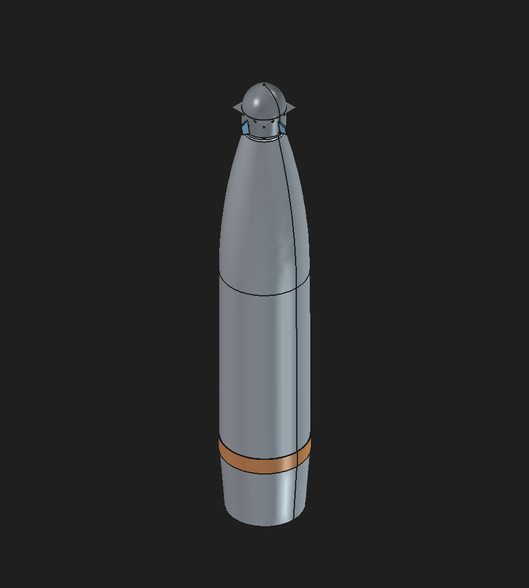
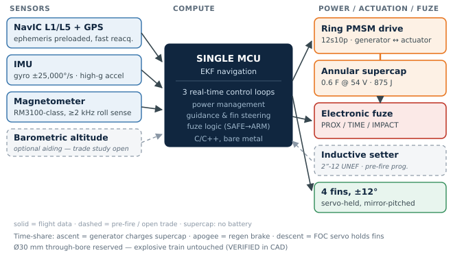
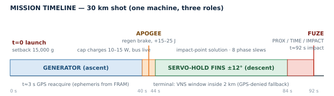
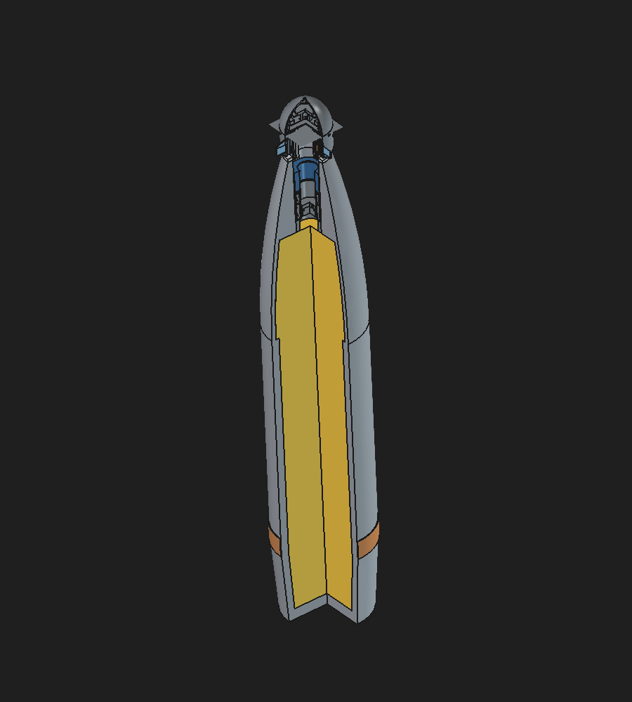
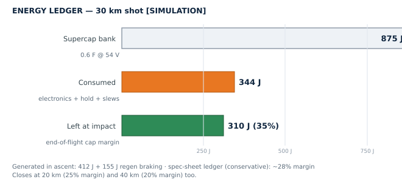
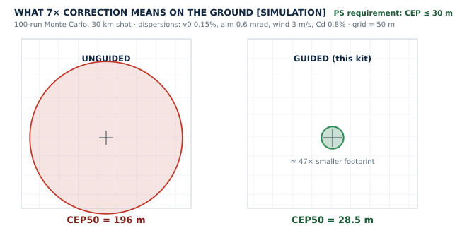

A single 12s10p ring PMSM time-shares two jobs: ascent = windmill generator, descent = fin actuator for 4 mirror-pitched fins (±12°).
Annular supercap 0.6 F @ 54 V stores 875 J harvested from the shell's own flight; mission needs 344 J → ~2.5× margin. SIMULATION
Proximity (FM-CW ring antenna) / Time (timed self-destruct) / Impact (inertia); SAFE→ARM set via inductive programmer.
28.5 m CEP vs 196 m unguided at 30 km — PS target ≤ 30 m met. SIMULATION



| Single time-share machine + kit | |
|---|---|
| Machine | 12s10p ring PMSM · Kt 0.095 N·m/A TARGET · generated EMF 150–200 V |
| Storage | Annular EDLC supercap 0.6 F @ 54 V — 875 J, charged in flight |
| Actuation | 4 mirror-pitched fins ±12° · 15–25 N lateral · 200–300 m correction authority |
| Navigation | NavIC L1/L5 + GPS · EKF fusion · RM3100-class mag ≥2 kHz · gyro ±25,000°/s |
| Sensors (open) | Barometric altitude — optional GNC aiding (PS example; trade study open) |
| Fuze | FM-CW proximity ring antenna / TIME (timed self-destruct) / inertia impact |
| Interface | 2”-12 UNEF inductive fuze setter — pre-fire programming |
| Embedded | Single MCU · 3 loops (power, guidance, fuze) · C/C++ bare metal |


| Risk | Strategy / gate |
|---|---|
| Windmill self-start is the single-point failure (no generation and no actuation) | Self-start reliability target ≥0.999 + dedicated spin-tunnel test gate |
| 3DOF point-mass sim not enough for terminal claims | 6DOF rung (Magnus, precession, yaw-of-repose) before PDR |
| Motor Kt 0.095 N·m/A is analytical TARGET | FEMM + prototype verification gate |
| Annular EDLC gun-hard qualification data lacking | Shock-test gate at 15,000 g on the stack |
